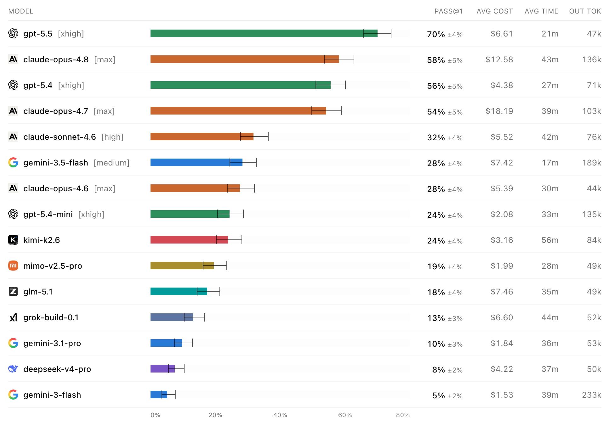
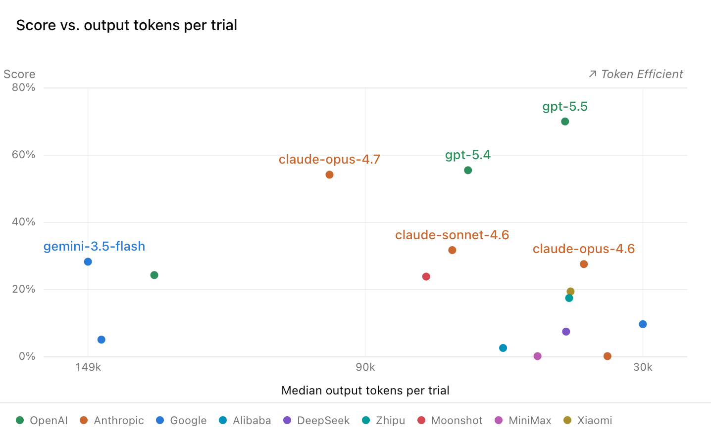

近年、ソフトウェア開発の領域において、強力な推論能力を備えたAIコーディングエージェントの進化が目覚ましい。しかし、これらの高度なモデル（LLM）がソフトウェアエンジニアリングにおいて真にどの程度の能力を有しているのかを正確に評価するためのベンチマークは、AIの進化速度に追いついていないのが現状である。
本稿では、既存の評価指標の限界を克服し、現実世界の複雑なタスクにおけるエージェントのパフォーマンスをより正確に測定するために開発された最新のベンチマーク「DeepSWE」について、その基本概念から定性的な分析結果、そしてAIを活用したソフトウェアテストの未来像までを解説する。

既存のベンチマークが抱える本質的な課題
AIコーディングエージェントの能力を測る上で、SWE-Benchなどの既存のベンチマークは重要な役割を果たしてきた。しかし、モデルの能力が向上するにつれて、これらの評価手法が持ついくつかの致命的な限界が浮き彫りになりつつある。
- ベンチマークの汚染（Contamination）： 現在の最大の課題は、モデルの事前学習データにベンチマークのタスクや解答が意図せず含まれてしまう「データ汚染」である。既存のベンチマーク（例えばSWE-Bench Verifiedなど）は公開されているGitHubのPull Requestやコミット履歴から問題を抽出しているため、モデルが純粋な問題解決能力を発揮しているのか、単に過去に見たコードを「記憶（Recall）」から引き出しているだけなのかを区別することが困難になっている。
- 限定的なスコープと単純化されたタスク： 多くの公開ベンチマークは、小規模な関数の生成や短いコードスニペットの補完など、孤立した単純なタスクに偏っている。また、対象となるリポジトリも限定的で、高度にメンテナンスされた少数の有名プロジェクトに集中している。これでは、複雑な依存関係やレガシーコード、アーキテクチャ設計が絡み合う現実のソフトウェアシステムにおけるパフォーマンスを正しく評価できない。
- 検証機能（Verifier）の信頼性の欠如： ベンチマークの精度は、生成されたコードを評価するVerifierの質に完全に依存する。既存のベンチマークでは、マージされたPull Requestのテストスイートをそのまま流用することが多いが、これは「特定の意図された実装」のみを通すように作られていることが多く、他の有効なアプローチを誤って不合格（False Negative）にしたり、逆に要件を満たしていないコードを合格（False Positive）にしてしまう問題が多発していた。
DeepSWEの革新性：4つの主要なアプローチ
これらの課題を解決するため、DeepSWEは「Long-horizon（長期的な視野を要する）」なソフトウェアエンジニアリングタスクに焦点を当て、以下の4つの革新的なアプローチを導入した。
1. 汚染のないタスク設計（Contamination-Free Tasks）
DeepSWEのタスクはすべて、既存のコミットやPull Requestから流用するのではなく、完全にゼロから作成されたオリジナルの問題である。さらに、これらの解答は元のアップストリームリポジトリにマージされることはない。これにより、いかなるLLMも事前学習段階で解答を見たことがない状態が保証され、モデルの真の「ゼロからの問題解決能力」を測定することが可能となる。
2. 高い多様性と広範なカバレッジ
エージェントが実世界で遭遇する多様なコードベースに適応できるかを評価するため、DeepSWEは非常に広範なリポジトリを対象としている。具体的には、500以上のGitHubスターを持つアクティブなオープンソースプロジェクトから選ばれた91のリポジトリと、5つのプログラミング言語（TypeScript、Go、Python、JavaScript、Rust）を網羅している。これにより、特定のフレームワークに過剰適合したモデルを排除し、より汎用的な実力を測ることができる。
3. 現実世界を反映した複雑性
DeepSWEのプロンプトは、開発者が実際にエージェントに指示を出すような、短く自然な言葉で記述されている。SWE-Bench Proのプロンプトと比較して平均文字数は約半分（2,158文字）であるにもかかわらず、要求される変更ははるかに大規模である。解決に必要な追加コード行数は平均668行に達し、これはSWE-Bench Pro（平均120行）の5.5倍に相当する。エージェントは過剰に指定された指示に従うだけでなく、コードベースを自ら探索し、どこをどのように修正すべきかを発見しなければならない。
4. 振る舞いベースの高精度な検証（Behavioral Verifiers）
DeepSWEのVerifierは、実装の詳細な構造ではなく、ソフトウェアの「観測可能な振る舞い（Observable Behavior）」をテストするように手書きで専用設計されている。エージェントが内部のヘルパー関数を書き換えようが、新しいモジュールを追加しようが、最終的な出力やAPIの挙動が要件を満たしていれば合格となる。
監査によれば、SWE-Bench ProではVerifierの誤判定（AIの専門的な判定との不一致）が約32%のケースで見られた（False Positiveが約8.5%、False Negativeが約24.0%）。これに対し、DeepSWEのVerifierの誤判定率はわずか1.4%（False Positive 0.3%、False Negative 1.1%）に抑えられており、極めて信頼性の高い評価基盤を提供している。
パフォーマンス分析から見えてくる最先端モデルの実態
DeepSWEによる評価結果は、最先端モデル間の能力差をかつてないほど鮮明に描き出している。SWE-Bench Proのリーダーボードではトップクラスのモデル群が狭いスコア帯に密集していたのに対し、DeepSWEでは明確な順位と大きなギャップが確認された（例：GPT-5.5が70%、GPT-5.4が56%、Claude Opus 4.7が54%など）。
コスト・効率と精度の非相関性
興味深いことに、出力トークン数、タスク完了までの所要時間、および試行あたりのコストは、必ずしも正答率（Pass Rate）と強い相関関係を持たないことが明らかになった。例えば、GPT-5.5は最も高いスコア（70%）を達成しつつも、試行あたりの出力トークン数の中央値は約47kと、他のモデルと比較して極めてトークン効率が高かった。単に長く推論を続けたり、大量のコードを出力したりすることが、ソフトウェアエンジニアリングタスクにおける成功を保証するわけではない。

モデルファミリーごとの定性的な特徴と失敗の傾向
DeepSWEの定性的なエラー分析は、各モデルの思考プロセスに特有のパターンがあることを示している。
- Claudeの環境への注意力と「物忘れ」： Claude（Opus 4.7など）は環境に対する観察力が高く、既存のテスト環境の不具合やリポジトリの履歴を探索する能力に長けている。場合によっては
git logを駆使して正解に近い情報を環境から引き出そうとする（DeepSWEでは環境がクリーンなためこの「チート」は防がれている）。一方で、プロンプトが「同期（sync）と非同期（async）の両方をサポートせよ」といった複数要素を含む場合、一方の実装に集中するあまり、もう一方を完全に忘れてしまう（Missed Requirement）傾向が他モデルより強く見られた。 - GPTの厳密な指示追従性： GPTモデル（GPT-5.5、GPT-5.4）は、要求された要件を見落とす確率が最も低かった。プロンプトと既存のコード規約を文字通り厳密に解釈し、指示された範囲のパッチを正確に生成する能力において、現在最も安定した結果を残している。
- 自律的なテスト行動の違い： 高度なモデルほど、自発的にコードのテストを実行する傾向にある。DeepSWEの環境下では、GPT-5.4やClaude Opus 4.7は、プロンプトで明示的に指示されずとも、80%以上の確率で対象プロジェクトのテストフレームワークを用いて新規テストを記述し、自己検証を行った。対照的に、SWE-Bench Proのプロンプトでは「テストロジックを変更しないこと」という文言が含まれているため、優秀なモデルであっても自発的なテスト記述を控えてしまう（20%前後まで低下する）現象が確認された。
ソフトウェアエンジニアリングとテストの未来像
DeepSWEが示すエージェントの自律的なテスト行動は、今後のソフトウェア開発における「テスト」の在り方が根本的に変わることを示唆している。
これからのAIを活用したテスト分野では、人間に代わって完全なテストスイートを生成し、アプリケーションの動作から学習してテストカバレッジを自律的に向上させるエージェントが主流となるだろう。AIは単なる受動的な検証ツールから、開発の予測的なパートナーへと進化する。
また、AIが生成したコードの非決定的な振る舞いや幻覚（Hallucinations）に対処するため、テスト自体にも「確率的アサーション（Probabilistic Assertions）」のような新しいパラダイムが求められる。人間はAIと協働し、最終的な品質判断やアーキテクチャの意思決定を行う「Human-in-the-loop（ヒューマン・イン・ザ・ループ）」のアプローチが、DevOpsやCI/CDのパイプラインを加速させる鍵となる。
まとめと今後の展望
DeepSWEは、汚染のないオリジナルなタスク設計と、振る舞いベースの厳格な検証プロセスにより、AIコーディングエージェントの真の能力を評価するための新たな金字塔を打ち立てた。
- 現在の限界： モデル間の純粋な比較を行うため、すべての評価は標準化されたハーネス（
mini-swe-agent）上で実行されており、各ベンダーが提供するネイティブな環境（Claude CodeやCursorなど）での最適化されたパフォーマンスを完全には反映できていない。また、対象が500スター以上のアクティブなリポジトリに限られているため、ニッチなレガシーコードへの適応力は未知数である。 - 今後の課題と発展： 今後は、単一のハーネスへの依存から脱却し、複数の実行環境でのテストを統合していくことが求められる。また、エンタープライズ領域で需要の高いC++やJavaといった言語への対応、さらにはLLMの判定と動的ユニットテストを組み合わせた「ハイブリッドVerifier」の導入により、さらに自然なプロンプトによる評価システムの構築が期待される。
AI支援によるソフトウェア開発が急速に普及する中、DeepSWEのような妥協のないベンチマークの存在は、モデルの過大評価を防ぎ、より堅牢で信頼性の高いAI開発を牽引する不可欠なインフラとなるだろう。